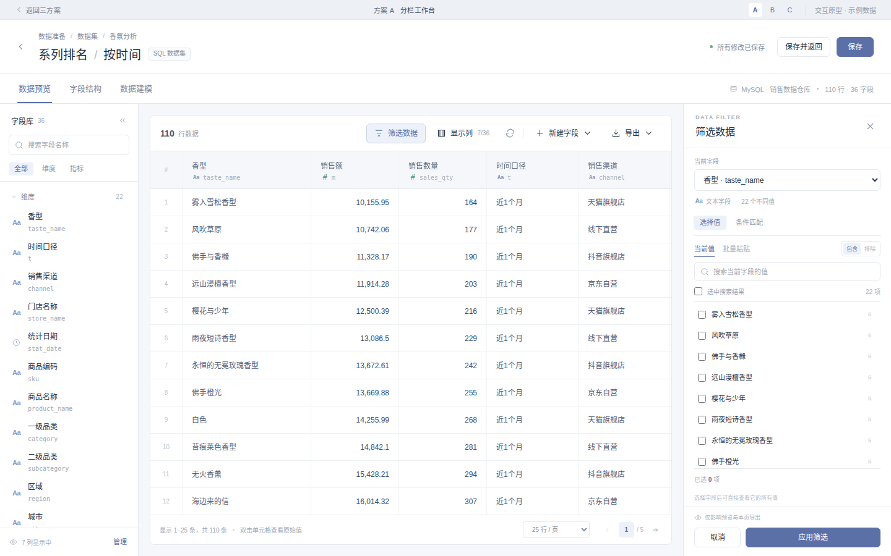
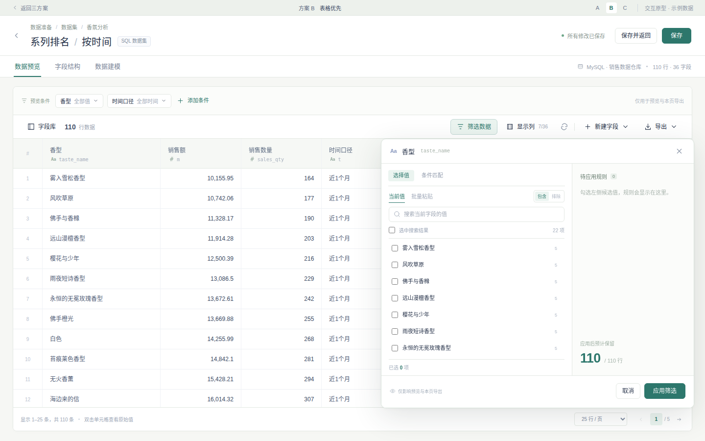
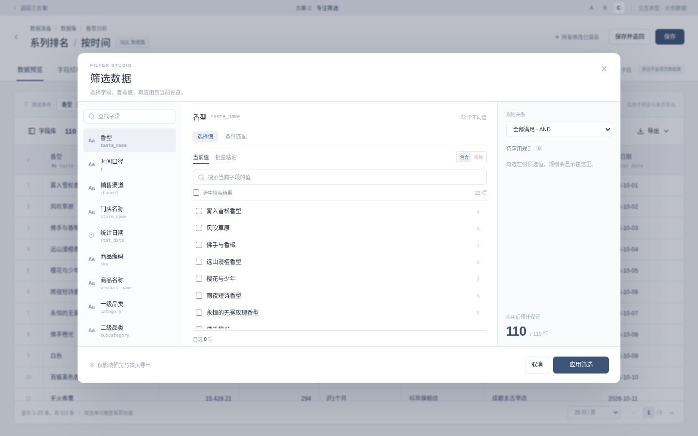

三套整页交互方案。分别侧重并行核对、表格空间与复杂筛选，可进入原型实际操作。

字段、数据、筛选同时可见。右侧直接选值，一边调条件，一边核对结果，适合频繁探索数据。

把空间留给表格。字段库按需展开，点列头就能筛选，条件以轻量标签常驻，查看大宽表更舒展。

主页面保持简洁。筛选时进入三栏工作区，左选字段、中间选值、右看条件，集中处理多字段规则。
独立滚动的字段库与固定搜索 · 字段真实候选值交互（原型示例数据） · 搜索、多选、排除、批量粘贴 · 数值与日期范围 · 筛选列 · 单元格完整值 · CSV 导出筛选只影响当前预览和本页导出；不改变数据集本身，不改变卡片取数范围。